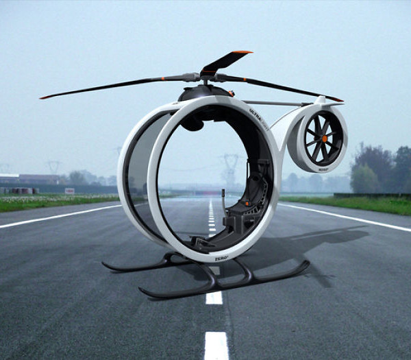
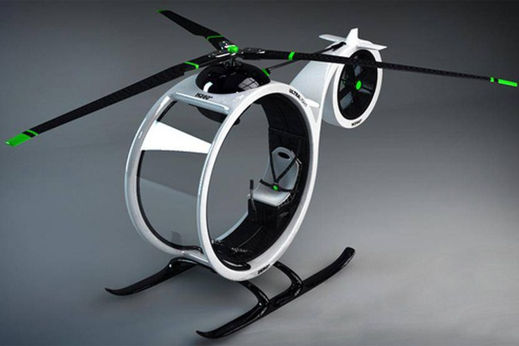
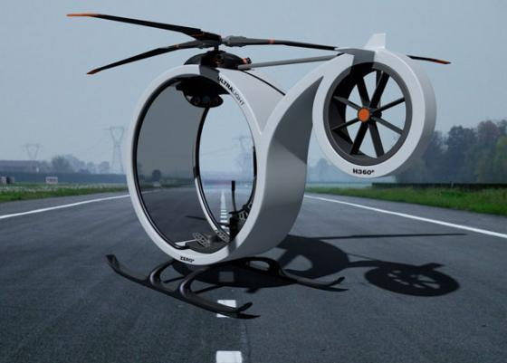
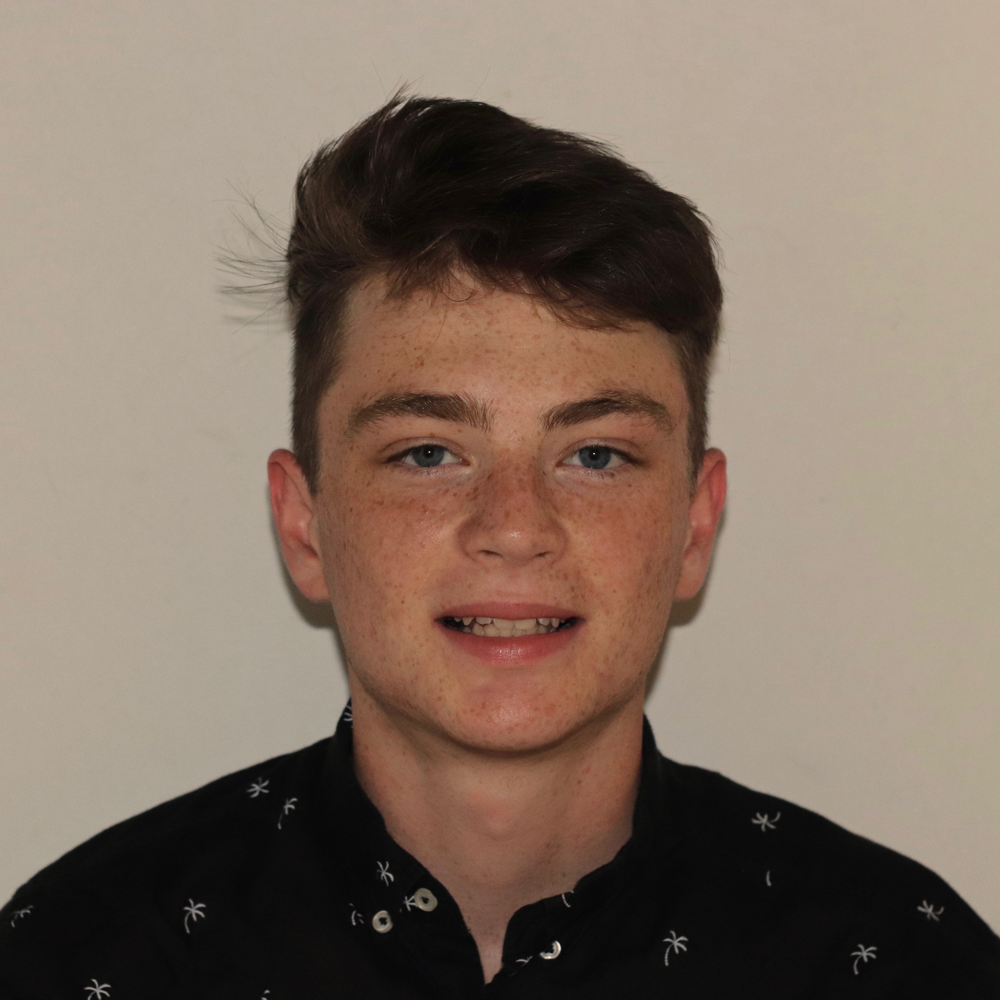

Please, Check All Statements That Apply:
My Commute Times Are Too Long
I Could Use More Free Time
I Spend Too Much Money On Gas
I Would Rather Fly Everywhere
If you checked any of the boxes above, then you have come to the right place. Here at FlySolo Company, we make the best personal flying machines on the market. The FlySolo (pictured below), is 100% electric powered, and can get you to your destination in roughly 25% of the time it would take to drive. With a range of 500 miles, distance should never be an issue. The Fly Solo is also incredibly easy to use. Our intelligent team of engineers have designed a fool-proof operating system, while still holding safety paramount.

With corporate offices located in Pittsburgh, Pennsylvania, FlySolo Co. employs roughly 5,000 people across the United States and from more than 20 countries. This represents one of the most diverse, talented and innovative workforces anywhere. Founded in 2018, FlySolo Co. is an upcoming company that offers around-the-clock customer service. We are passionate about providing the safest possible product at an affordable price. We strive to act with integrity, thus we require all employees to follow the National Society of Professional Engineers (NSPE) Code of Ethics.
|  |
| Theodore Storl-Desmond |